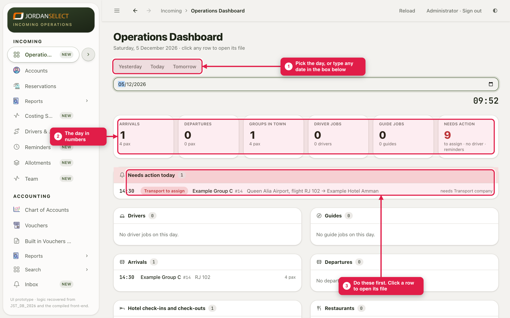
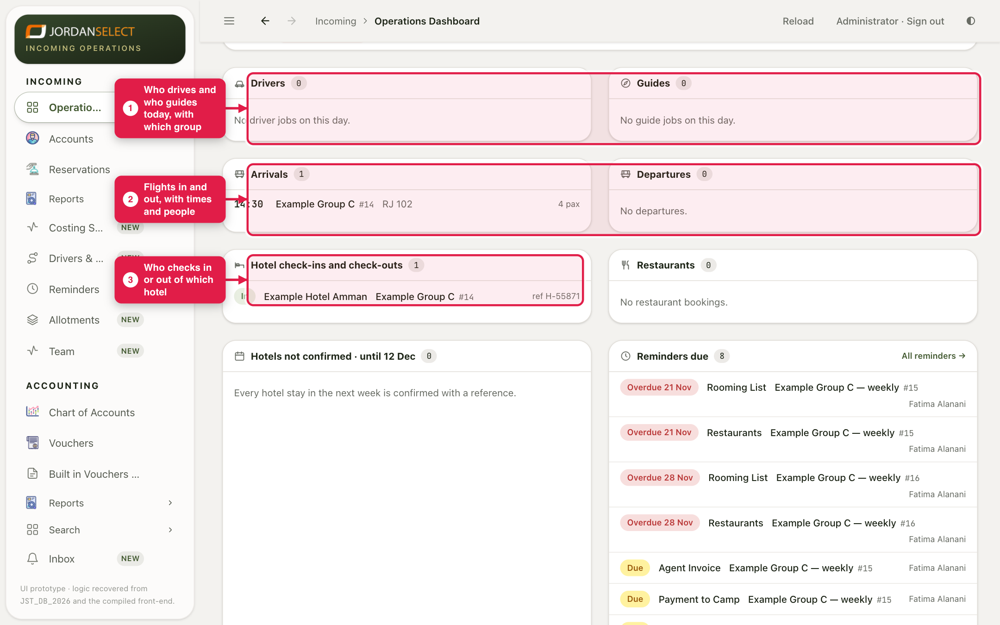
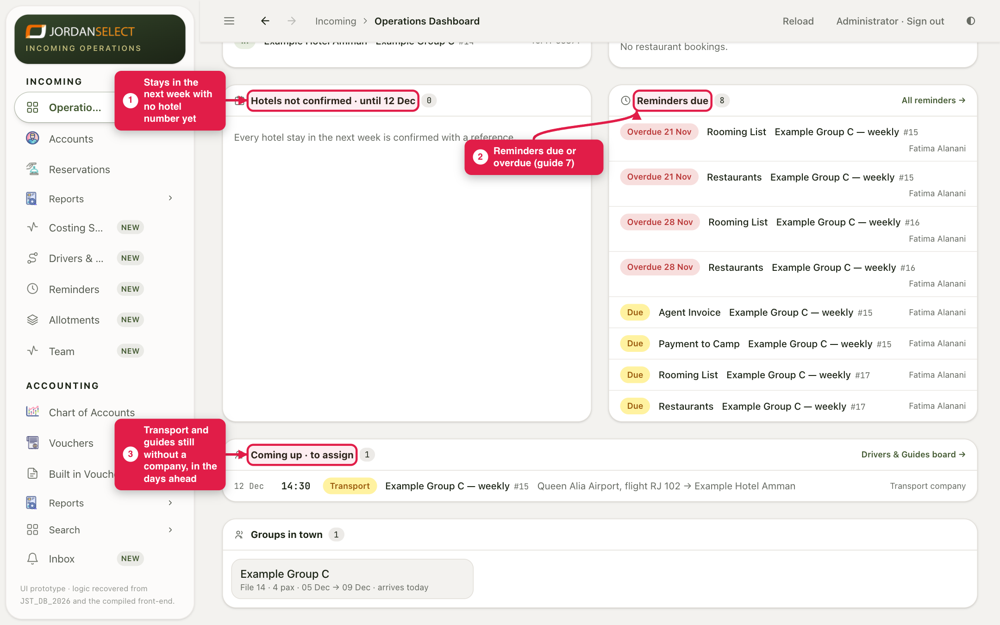

One screen for one day: who arrives, who leaves, who drives, who guides, and what still needs doing.
WhoOperations, first thing every morning
WhereIncoming → Operations Dashboard
TakesA few minutes
You needNothing; it reads every file for you
How it works
The dashboard reads every file and shows one day. Nothing is typed here. Click any row to open its file and do the work there.
Example in this guide: Saturday 5 December 2026, the day Example Group C (file 14) arrives. Its airport transfer still has no company.
1. Pick the day and read the top
1
Open Incoming → Operations Dashboard. It opens on today. Click Yesterday or Tomorrow, or type any date in the box.
2
The tiles count the day: arrivals, departures, groups in town, driver and guide jobs, and Needs action.
3
Needs action today is what to do first: a transfer with no company, a job with no driver, a reminder due. Click a row to open its file.

5 December: one arrival, and one transfer waiting for a company.
2. The day’s lists
4
Below, the day is split into lists: Drivers and Guides (who works, with which group), Arrivals and Departures (flights, times, people), Hotel check-ins and check-outs, and Restaurants.

Nobody is driving yet on 5 December: guide 2 assigns the transfer.
3. What to chase
5
At the bottom: Hotels not confirmed in the next week (guide 5), Reminders due (guide 7), and Coming up · to assign, the transport and guides still without a company in the days ahead.

Work down these lists each morning. An empty list says so.
Plan tomorrow todayBefore you leave, click Tomorrow. Anything still in Needs action or To assign is tomorrow morning’s problem.
4. Check your work
Needs action today is empty, or each item has someone on it.
Every arrival has a driver.
No hotel in the next week is still unconfirmed.
Questions? Ask the operations manager. · Last checked: ____ · Screens shown are from a test copy of the CRM with made-up data.